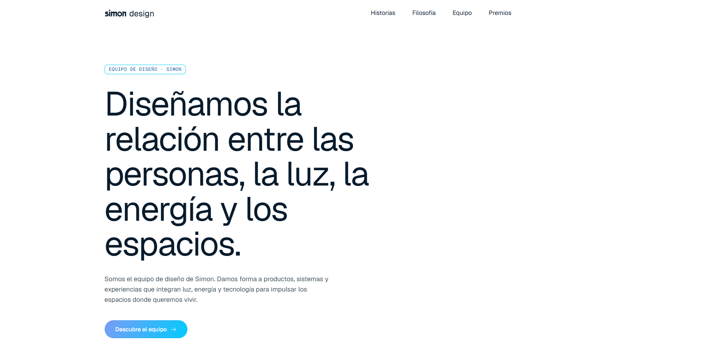

Simon Design
Web del equipo de diseño de Simon: historias, filosofía, equipo y reconocimientos del estudio.
Sobre el proyecto
Simon Design es el sitio del equipo de diseño de Simon, la marca de mecanismos e iluminación. La web recoge cómo el equipo da forma a productos, sistemas y experiencias que integran luz, energía y tecnología en los espacios donde vivimos.
Está estructurada en cuatro bloques: Historias (artículos del estudio sobre producto, digital y espacios), Filosofía, Equipo y Premios. Construida con Next.js y React, con tipografía de gran escala y un acento azul degradado como identidad visual.
Stack
Next.js
React
JavaScript
CSS3
Vercel
Capturas
